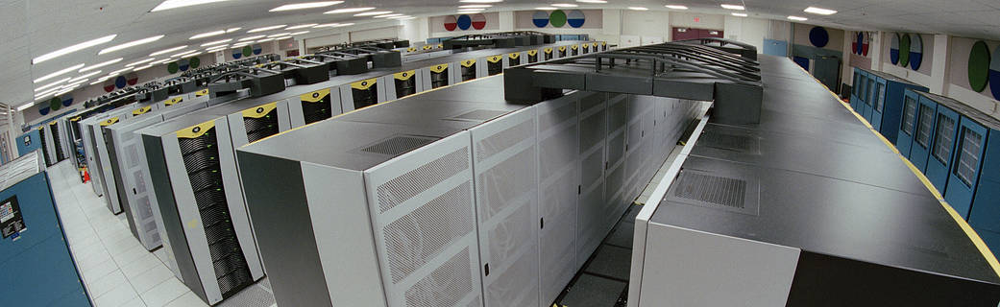

Databaser og datamodeller
En data base Før lagret vi data i bøker i biblioteker og i papirer i arkivskap. I digre skuffer og skap kunne foreksempel etterforskere i politiet finne arkiverte opplysninger om gamle forbrytelser. Innholdet i arkivene var strukturert og sortert etter foreksempel årstall eller alfabetet, så det skulle være enkelt å finne fram. I dag er lagring av strukturerte data digitalisert, og dataene lagres i datamaskiner. Når data er lagret på denne måten, kaller vi det en database. Akkurat som i de gamle arkivene er det viktig at informasjonen i databasen er ordnet på en måte som gjør det enkelt å finne de opplysningene vi trenger, etter at de er lagt inn.

Bilde av NASA databaser (bilde:NASA)
Når du betalerfor en vare med bank kortet ditt, blir data om denne transaksjonen lagret i en database. Banken holder da orden på hvor mye penger du har, og hvor mye du har brukt. På telefonen din har du kanskje lagret bilder og gamle meldinger. Meldinger du skriver i sosiale medier, hvilke sanger duspillerpåonlinemusikktjenester,hvilketnivåduerpåispill–alt dette og mer til blir lagret i databaser.
Tekst kilde: Kode 1 - Informasjonsteknologi (Gløer,Olav langslet 2017)